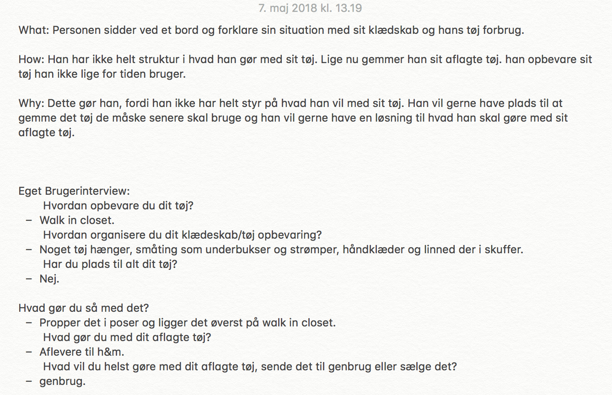

Brugerinterviews
What
Personen sidder ved et bord og forklare sin situation med sit klædskab og hans tøj forbrug.
How
Han har ikke helt struktur i hvad han gør med sit tøj. Lige nu gemmer han sit aflagte tøj. han opbevare sit tøj han ikke lige for tiden bruger.
Why
Dette gør han, fordi han ikke har helt styr på hvad han vil med sit tøj. Han vil gerne have plads til at gemme det tøj de måske senere skal bruge og han vil gerne have en løsning til hvad han skal gøre med sit aflagte tøj.
Eget Brugerinterview
Hvordan opbevare du dit tøj?
Wlak in closet.
Hvordan organisere du dit klædeskab/tøjopbevaring?
Noget tøj hænger, andet som undertøj, sokker, håndklæder ligger i skuffer.
Har du plads til alt dit tøj?
Nej.
Hvad gør du med det tøj du ikke har plads til i dit klsædeskab?
Pakker det i poser og opbevare på toppen af skabet.
Hvad gør du med dit aflagte tøj?
Aflevere til HogM
Hvad vil du helst gøre med dit aflagte tøj, sende det til genbrug eller sælge det?
Genbrug.
